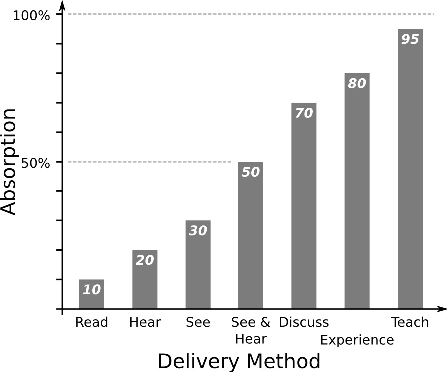
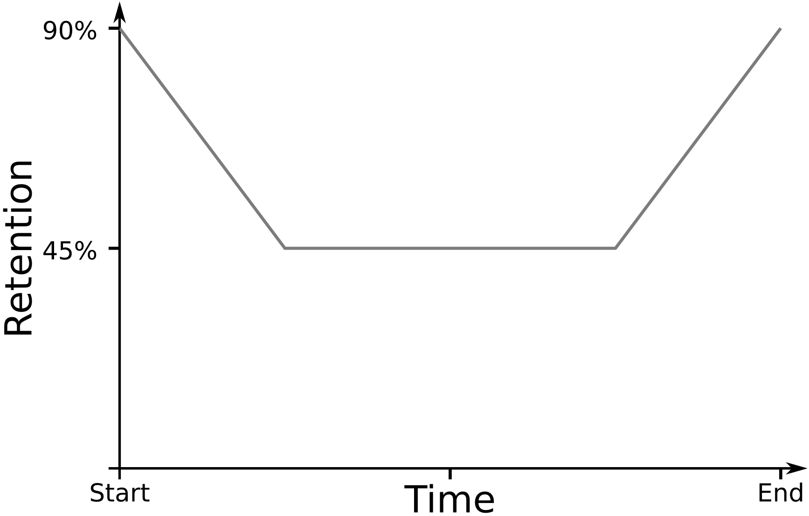
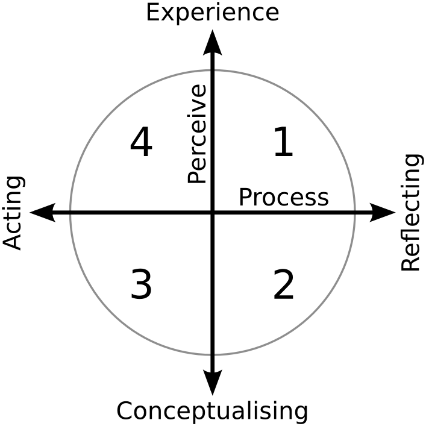

class: center, middle, title .header[ .header-left[<img height="70px" src="http://www.latrobe.edu.au/__data/assets/image/0011/545987/logo.png"/>] .header-right[<img height="70px" style="padding-right: 30px;" src="../../img/vlsci_logo.gif"/>] ] <!-- SETUP --> # Training the Trainer ## A tale of two roles ??? **Imagine** a world,, a world where ALL Life Scientists, are ,competent, Bioinformaticians **comfortable**: ... where they are as comfortable using Unix as a wet lab **Trainer > Learner > Trainer**: Over the last few months I had the opportunity to be, a Trainer, a Learner and back to Trainer **Online Course**: I completed an online course on training and got to put much of it into practice. **Do Training**: I encourage anyone running workshops and training to got out and do the same; it will improve your courses no end. --- # Problem Evil HPC Usage ??? **Villain**: At LTU, we had users doing all sorts of evil to out HPC. **CORES**: Requesting 32 cores, using 1 OR worse requesting 1 using 16. **Teach**: We needed to teach them how to do it properly. ... Scientists, unwittingly doing all sorts of evil to our HPC. --- # Workshop #1 Intro to Unix ??? **Unix first**: Before we could teach HPC, we needed to make sure their Unix skills are up to scratch. **Bernie's workshop**: We took Bernie's latest Unix Workshop and ran with it. **WOW**: While reading it, I though WOW, this is awesome content, these students are going to love it. **Pre-reading, Q/A**: As Bernie had done, we gave out older workshop material as pre-workshop reading and gave them the Q and A documents during the workshop. ... * Took Bernie's course, WOW * Old notes (background reading) * Question sheet * Answer <!-- CONFRONTATION --> --- # Results Lost ↔ Love it Constructive Feedback ??? So how did it go? ... **Two Groups**: We found two distinct groups, the Loved it, OR were completely lost, One even LOST IT **Constructive**: We were lucky, the learners provided very constructive feedback. 3 common themes: **Pres**: Introductory Presentation **Lost**: Lost between the Questions, Notes and Answers **Time**: wanted more time. --- # Critical Reflection Important What/Why? Many Sources ??? * Learners are #1 * Very important to improve your course ... **Important**: Critical Reflection is really important, as it aids continuious improvement. **What**: you need to work out what ACTUALLY happened (which may be different to what they learners say) AND **Why**: why did this happen which is not always imediately clear **Many forms**: * **Survey** afterwards * **Question, Discuss and Observe** the learners during the session * **Discussion** with co-Facilitators In out case it, all the causes for failure weren't immediately obvious, but they did give us some useful incite. --- # Introductory Presentation ??? The Learners had **asked** for a **Presentation**, but how might we do this **effectively** --- # No Assumptions From Zero Terminology Start Slowly ??? Cannot **afford** to make any **assumptions** ... * Try to remember back before you knew topic * Need to explain all new terminology * Start slow and give an easy win ... Also very obvious, we cannot afford to make any assumptions. We must start from Zero, .. A blank slate Introduce all Terminology, this can be thoughout the workshop but must be before it is used. e.g. Command, Options, Flags: we may use them every day, but at one point we didn't know what they were. Easy wins, baby steps --- # 6x4 Rule 6 points 4 words Maximum ??? MAX * 6 points * 4 words It's best to discuss the items Otherwise ADULT Learners think "I can READ myself" Distracts learners from listening ... With regards to slides, use the 6x4 rule That is 6 points with 4 words maximum. Keep it simple as waiting for the learners to read them in a distraction. --- # How we learn .center[  ] .ref[[1] William Glasser] ??? LONG PAUSE!!!! Some interesting research from Glasser about how much is Absorbed by Delivery Method * READ 10% hence previous slide * COMBINE: is best * EXPERIENCE 80% great, workshops it is * TEACH 95%, why you should pair up --- # Primacy and Recency .center[  ] ??? **Primacy**: The first thing in your session is more memorable than the second etc. **Recency**: The last thing in your session sticks with them more than the second last etc. **Waste**: Consequently you want to put your most important messages at the start and end. Don't waste it introducing yourself, or asking for questions. **Test**: what was the first thing I said today? ... 30 to 60 seconds to grab someones attention Leave audience with a strong message Challenge to use knowledge gained --- # 50/50 engagement Why? ??? **Intro, not explain**: While an intro will help engage the learners I don't think it explained all the effect we saw. **Why** might this be? --- # Learning styles .leftcol[ 1. Why 2. What 3. How 4. [What] If ] .rightcol[  ] .ref[☆ McCarthy's 4MAT model] ??? Everybodies learning style are different. **4**: McCarthy suggests that there are 4 main learning styles. **Perceive**: Which are categorised by how we **Perceive** the world (vertical axis) **Process** this knowledge (horizontal). 4 types: * WHY is it so? (MEANING) * WHAT do I need to do? (THINKING) * HOW does it work? (TEST THEORIES) * WHAT IF I changed this? (TRIAL/ERROR) **Spread around all**: Important to spread tasks over ALL learning styles OR you will have trouble engageing all learners. **Continuum**: these are continuums so we can sit anywhere along each axis which roughly places us under 4 types <!-- **Clue in Q's**: Often find that learners will start question with the name of their type --> --- # Workshop Changes Think → Help → Answer Re-word Questions Smooth Learning Curve .spacer[] <div class="showable-container question showable-hidden" id="showable0"> <div class="showable-inner"> <div class="showable-header question" id="showabletitle0"> <span class="link-like" id="showablelink0">What is the Answer to Life?</span> </div> </div> </div> <div class="showable-container hint showable-hidden" id="showable1"> <div class="showable-inner"> <div class="showable-header hint" id="showabletitle1"> <a href="#7" id="showablelink1">Hint</a> </div> <div class="showable-body hint" id="showablebody1"> <p> What is the answer to everything? </p> <p> As featured in <em>"The Hitchhiker's Guide to the Galaxy"</em> </p> <div class="showable-container showable-hidden" id="showable2"> <div class="showable-inner"> <div class="showable-header" id="showabletitle2"> <a href="#7" id="showablelink2">More</a> </div> <div class="showable-body" id="showablebody2"> <p> It is probably a two digit number </p> </div> </div> </div> </div> </div> </div> <div class="showable-container answer showable-hidden" id="showable3"> <div class="showable-inner"> <div class="showable-header answer" id="showabletitle3"> <a href="#7" id="showablelink3">Answer</a> </div> <div class="showable-body answer" id="showablebody3"> <p> <strong>Answer</strong>: 42 </p> <p> Ref: <a href="http://en.wikipedia.org/wiki/42_%28number%29">Number 42 (Wikipedia)</a> </p> </div> </div> </div> ??? * Took Bernie's approach of Think > Help > Answer and "put it in their face" by including all 3 in one document * Re-worded an handful of questions to cater for other learning styles * Smoothed learning-curve particularly at the beginning --- # Workshop #2 Intro to Unix 2.0 ??? We were lucky enough to have the opportunity to run the workshop a second time. In version 2: **Presentation**: included the 30 min intro presentation **Homework**: removed the background reading (as most didn't do it anyway) **Time**: left it at 2.5 hours (despite request for more time) ... What changed: * 30min pres * No homework (before) * 2.5h (still) <!-- RESOLUTION --> --- # Success Why? ??? **Hit**: It was a huge hit. **Lost**: Nobody got Lost **Finished**: most learners completed or nearly completed all the content. **Not Fluke**: and to help show this isn't a fluke I develped a new HPC course along these lines with similar success. **WHY**, ... only **small changes** led to huge **improvement** --- # The Accidental Game Game-like learning Accept failure .ref[[1] www.instituteofplay.org/about/context/why-games-learning] ??? **Critical**: with a lot of discussion and critical reflection it dawned. **Game**: we had turned it into a game. Learners were trying their hardest to not use the **hints** (aka Cheats) **Failure**: If learners perceive work to be a game they will accept failure more and be more persistent --- # The Challenge .spacer[] .center[ Life Scientist ↓ Bioinformatician ] ??? **Encourage training**: I encourage anyone about to do training to **First** be a learner. **Challenge**: I leave you with this challenge .., to turn every Life-Scientist into a Competent Bioinformatician,, one exciting workshop at a time.